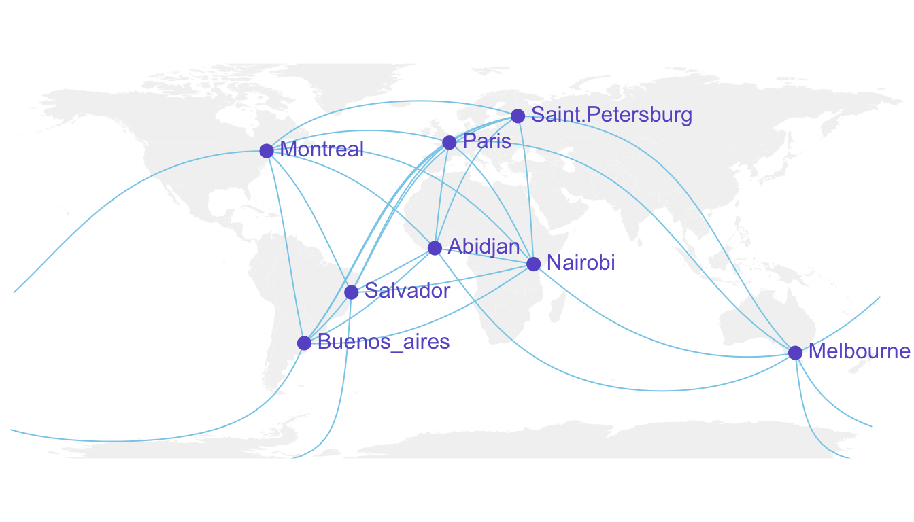

Draw an empty map
Let’s start by drawing a world map backgroud. Fortunately, the world
shape is provided by the maps library. It can easily be
plotted using the map() function that accepts a few
arguments for customization.
Note: visit the background map section
if you want to discover more options to build map in R.
# World map is available in the maps package
library(maps)
# No margin
par(mar=c(0,0,0,0))
# World map
map('world',
col="#f2f2f2", fill=TRUE, bg="white", lwd=0.05,
mar=rep(0,4),border=0, ylim=c(-80,80)
)
Add 3 cities
It’s relatively straightforward to add circles at specific positions
using the points() function. The hardest part is
probably to find out the longitute and latitude of the cities you
are interested in.
# Dplyr for data wrangling and pipe function
library(dplyr)
# Cities
Buenos_aires <- c(-58,-34)
Paris <- c(2,49)
Melbourne <- c(145,-38)
# Data frame
data <- rbind(Buenos_aires, Paris, Melbourne) %>%
as.data.frame()
colnames(data) <- c("long","lat")
# Show the cities on the map
map('world',
col="#f2f2f2", fill=TRUE, bg="white", lwd=0.05,
mar=rep(0,4),border=0, ylim=c(-80,80)
)
points(x=data$long, y=data$lat, col="slateblue", cex=3, pch=20)
Show connection between cities
Now we can connect cities drawing the shortest route between them.
This is done using great circles, what gives a better visualization
than using straight lines.
The geosphere package provides the
gcIntermediate() function that computes the path. This
path can then be plotted using the lines() function.
# Load geosphere
library(geosphere)
# Background map
map('world',
col="#f2f2f2", fill=TRUE, bg="white", lwd=0.05,
mar=rep(0,4),border=0, ylim=c(-80,80)
)
# Dot for cities
points(x=data$long, y=data$lat, col="slateblue", cex=3, pch=20)
# Compute the connection between Buenos Aires and Paris
inter <- gcIntermediate(Paris, Buenos_aires, n=50, addStartEnd=TRUE, breakAtDateLine=F)
# Show this connection
lines(inter, col="slateblue", lwd=2)
# Between Paris and Melbourne
inter <- gcIntermediate(Melbourne, Paris, n=50, addStartEnd=TRUE, breakAtDateLine=F)
lines(inter, col="slateblue", lwd=2)
Using the exact same method between Melbourne and Buenos Aires gives
a pretty disapointing result as shown here.
Indeed, there is a long horizontal line that appears, when we expect
the connection to be done on the other side of the globe (and thus
invisible)
What happens is that gcintermediate follows the shortest
path, which means it will go east from Australia until the date line,
break the line and come back heading East from the pacific to South
America.
Because we do not want to see the horizontal line, we need to plot this
connection in 2 steps. To do so we can use the following function, which
breaks the line in 2 sections when the distance between 2 points is
longer than 180 degrees:
# A function to plot connections
plot_my_connection=function( dep_lon, dep_lat, arr_lon, arr_lat, ...){
inter <- gcIntermediate(c(dep_lon, dep_lat), c(arr_lon, arr_lat), n=50, addStartEnd=TRUE, breakAtDateLine=F)
inter=data.frame(inter)
diff_of_lon=abs(dep_lon) + abs(arr_lon)
if(diff_of_lon > 180){
lines(subset(inter, lon>=0), ...)
lines(subset(inter, lon<0), ...)
}else{
lines(inter, ...)
}
}
Let’s apply this function to plot the link between Melbourne and
Buenos Aires. Better, isn’t it?
# Background map
map('world',col="#f2f2f2", fill=TRUE, bg="white", lwd=0.05,mar=rep(0,4),border=0, ylim=c(-80,80) )
# Circles for cities
points(x=data$long, y=data$lat, col="slateblue", cex=3, pch=20)
# Connections
plot_my_connection(Paris[1], Paris[2], Melbourne[1], Melbourne[2], col="slateblue", lwd=2)
plot_my_connection(Buenos_aires[1], Buenos_aires[2], Melbourne[1], Melbourne[2], col="slateblue", lwd=2)
plot_my_connection(Buenos_aires[1], Buenos_aires[2], Paris[1], Paris[2], col="slateblue", lwd=2)
Apply it to several pairs of cities
If we want to plot many connections, it is totally doable to build a
for loop that draws them one by one.
Moreover, note the use of the text function to add city
names.

# Create dataset
data <- rbind(
Buenos_aires=c(-58,-34),
Paris=c(2,49),
Melbourne=c(145,-38),
Saint.Petersburg=c(30.32, 59.93),
Abidjan=c(-4.03, 5.33),
Montreal=c(-73.57, 45.52),
Nairobi=c(36.82, -1.29),
Salvador=c(-38.5, -12.97)
) %>% as.data.frame()
colnames(data)=c("long","lat")
# Generate all pairs of coordinates
all_pairs <- cbind(t(combn(data$long, 2)), t(combn(data$lat, 2))) %>% as.data.frame()
colnames(all_pairs) <- c("long1","long2","lat1","lat2")
# background map
par(mar=c(0,0,0,0))
map('world',col="#f2f2f2", fill=TRUE, bg="white", lwd=0.05,mar=rep(0,4),border=0, ylim=c(-80,80) )
# add every connections:
for(i in 1:nrow(all_pairs)){
plot_my_connection(all_pairs$long1[i], all_pairs$lat1[i], all_pairs$long2[i], all_pairs$lat2[i], col="skyblue", lwd=1)
}
# add points and names of cities
points(x=data$long, y=data$lat, col="slateblue", cex=2, pch=20)
text(rownames(data), x=data$long, y=data$lat, col="slateblue", cex=1, pos=4)
An alternative using the greatCircle function
This is the method suggested by the
Simply Statistics
Blog to draw a twitter connection map.
The idea is to calculate the whole great circle, and keep only the
part that stays in front of the map, never going behind it.
# A function that keeps the good part of the great circle, by Jeff Leek:
getGreatCircle <- function(userLL,relationLL){
tmpCircle = greatCircle(userLL,relationLL, n=200)
start = which.min(abs(tmpCircle[,1] - data.frame(userLL)[1,1]))
end = which.min(abs(tmpCircle[,1] - relationLL[1]))
greatC = tmpCircle[start:end,]
return(greatC)
}
# background map
map('world',col="#f2f2f2", fill=TRUE, bg="white", lwd=0.05,mar=rep(0,4),border=0, ylim=c(-80,80) )
# map 3 connections:
great <- getGreatCircle(Paris, Melbourne)
lines(great, col="skyblue", lwd=2)
great <- getGreatCircle(Buenos_aires, Melbourne)
lines(great, col="skyblue", lwd=2)
great <- getGreatCircle(Paris, Buenos_aires)
lines(great, col="skyblue", lwd=2)
# City names and dots
points(x=data$long, y=data$lat, col="slateblue", cex=3, pch=20)
text(rownames(data), x=data$long, y=data$lat, col="slateblue", cex=1, pos=4)
Conclusion
Note that the
R graph gallery offers
heaps of other map examples made with
R. It also offers a whole section dedicated to
connection maps.
You can follow the gallery on
Twitter to be aware or
recent updates.